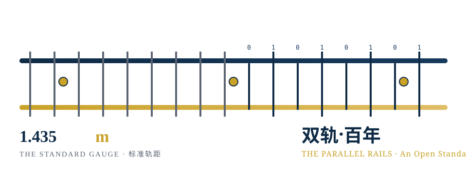
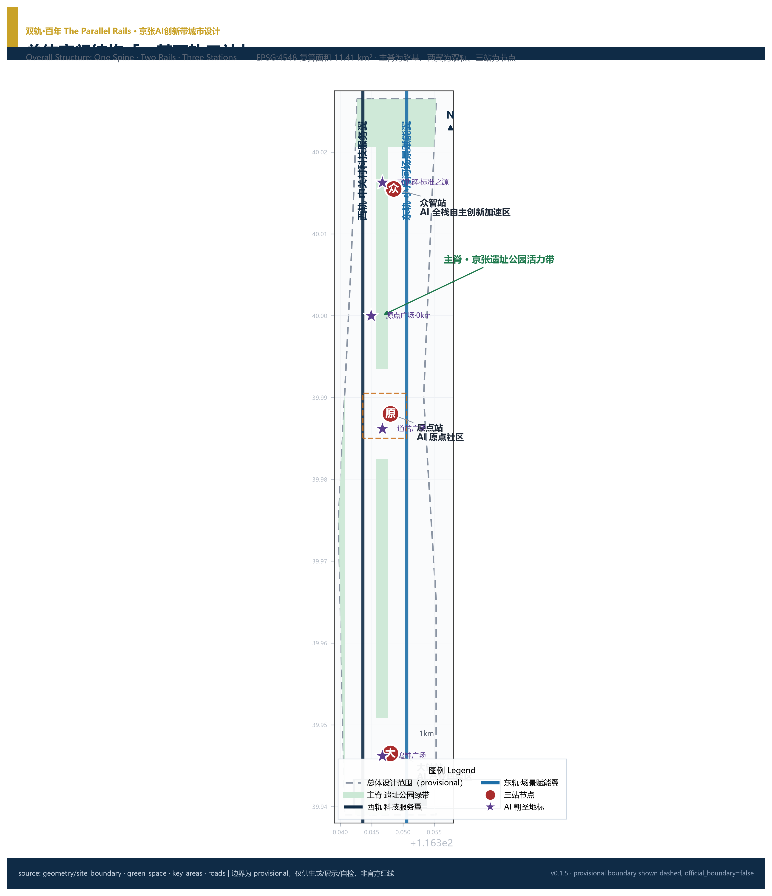

Coordinated Research Area
- AI industrial ecosystem & three-areas-two-wings loop
- 6 global case mechanisms
- Open-standard field (city-as-standard-field)

Offline visual overview of the official submission. Authoritative data remains in GeoJSON, metrics.json, the matrices and self-check results. Core concept: the Jing-Zhang Railway made China's first autonomous standard choice (1435mm gauge); the AI Innovation Belt makes the second — those who define the gauge define the horizon.
One spine (heritage park green corridor), two rails (Zhongguancun technology-service wing × Xiaoyuehe scenario-empowerment wing), three stations (Zhongzhi / Origin / Dazhong).

Coordinated research (43.6 km²) → overall design (11.4 km²) → key areas (approx. 368.4 ha announced).
12 scenario cards (incl. 3 test-validation), 6 personas, 5 pilgrimage landmarks; evidence chain: sources.json → geometry → metrics (EPSG:4548) → matrices → narrative.